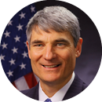

Environmental Protection Agency 
Empower Communities to Leverage EPA Water Infrastructure Investments
Goal Leaders:
|  | Peter Grevatt, Director, Office of Ground Water and Drinking Water (OGWDW) |
| Andrew Sawyer, Director, Office of Wastewater Management (OWM) |
Goal Statement: By September 30, 2019, EPA will increase by $16 billion the non-federal dollars leveraged by EPA water infrastructure finance programs (Clean Water and Drinking Water State Revolving Funds and the Water Infrastructure Finance and Innovation Act).
Goal Action Plan & Progress Update: